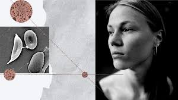

Sickle Cell Disease (SCD)

Sickle Cell Disease (SCD) is a group of inherited blood disorders characterized by the production of abnormal hemoglobin, known as hemoglobin S. This abnormal hemoglobin causes red blood cells to become rigid and shaped like a crescent or sickle, rather than their normal round, flexible shape. These sickle-shaped cells can obstruct blood flow in small blood vessels, leading to various complications.
Key Points About Sickle Cell Disease:
Types of Sickle Cell Disease
- Sickle Cell Anemia: The most common and severe form of SCD, caused by inheriting two sickle cell genes (one from each parent). It results in a high level of sickle-shaped cells in the bloodstream.
- Sickle Hemoglobin C Disease: Caused by inheriting one sickle cell gene and one hemoglobin C gene. It is generally less severe than sickle cell anemia.
- Sickle Beta-Thalassemia: Caused by inheriting one sickle cell gene and one beta-thalassemia gene. Severity varies depending on the type of beta-thalassemia gene.
- Sickle Cell Trait: Individuals inherit one sickle cell gene and one normal hemoglobin gene. They typically do not have symptoms but can pass the gene to their children.
Symptoms
- Pain Crises: Sudden, severe pain caused by blocked blood flow in the bones, chest, or joints.
- Anemia: Chronic shortage of red blood cells, leading to fatigue, weakness, and pallor.
- Swelling: Painful swelling in the hands and feet, especially in children.
- Frequent Infections: Increased susceptibility to infections due to spleen damage.
- Delayed Growth: Slower growth in children due to chronic anemia.
- Vision Problems: Damage to blood vessels in the eyes can lead to vision issues.
Diagnosis
- Blood Tests: A blood test called hemoglobin electrophoresis is used to identify the presence of hemoglobin S and confirm the diagnosis of SCD.
- Newborn Screening: SCD is often detected through routine newborn screening programs.
Treatment
- Pain Management: Pain relief through medications and sometimes hospitalization during pain crises.
- Hydroxyurea: A medication that helps reduce the frequency of pain crises and the need for blood transfusions.
- Blood Transfusions: To manage severe anemia and reduce complications.
- Bone Marrow Transplant: Potentially a cure for some patients, particularly if done early and with a suitable donor.
- Supplemental Oxygen and Fluids: Used to manage complications and maintain proper hydration.
Management
- Regular Medical Care: Regular check-ups with a hematologist and preventive care to manage symptoms and prevent complications.
- Vaccinations: Immunizations to protect against infections, which can be more severe in individuals with SCD.
Prevention and Genetic Counseling
- Genetic Counseling: Recommended for individuals with a family history of SCD or those in high-risk populations to understand the risk of passing the condition to offspring.
Living with Sickle Cell Disease
Individuals with SCD require ongoing management to reduce symptoms and prevent complications. With appropriate treatment and care, many people with SCD can lead fulfilling lives.